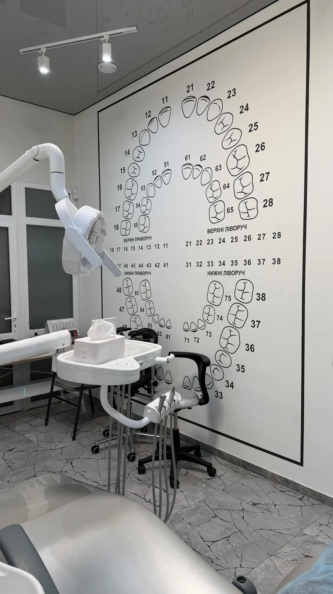
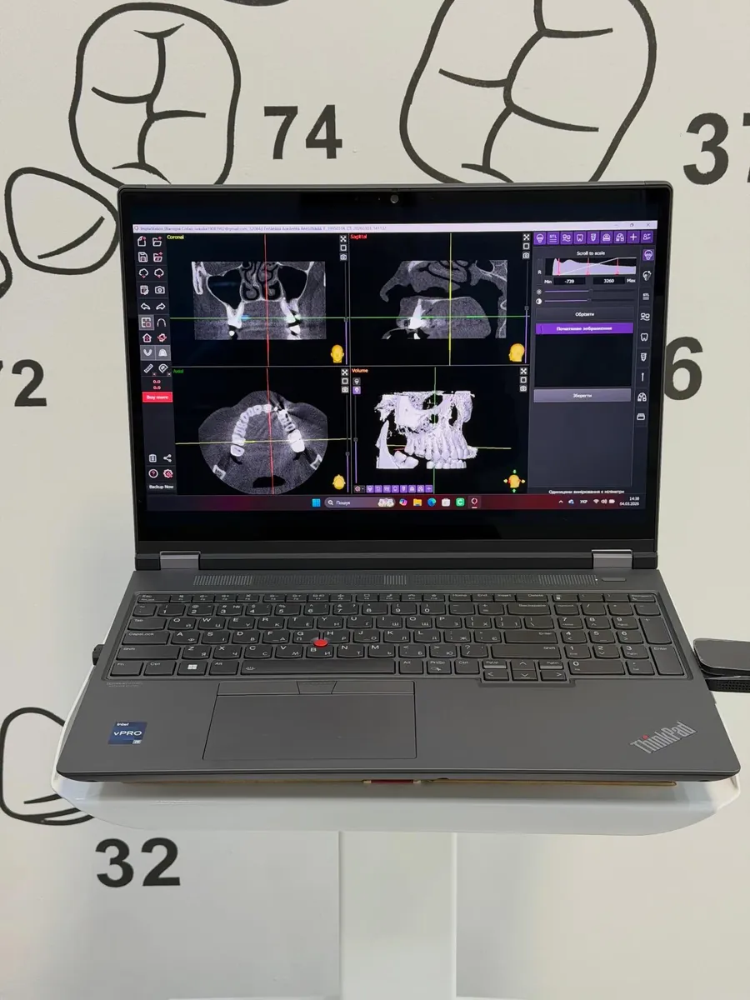
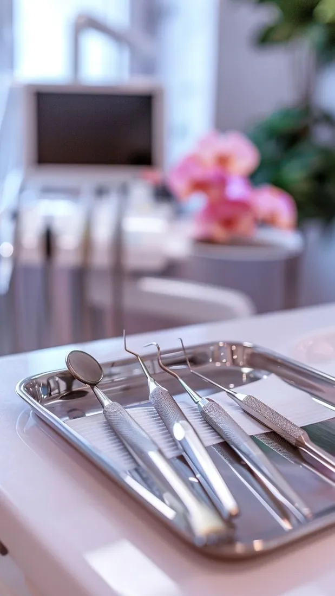
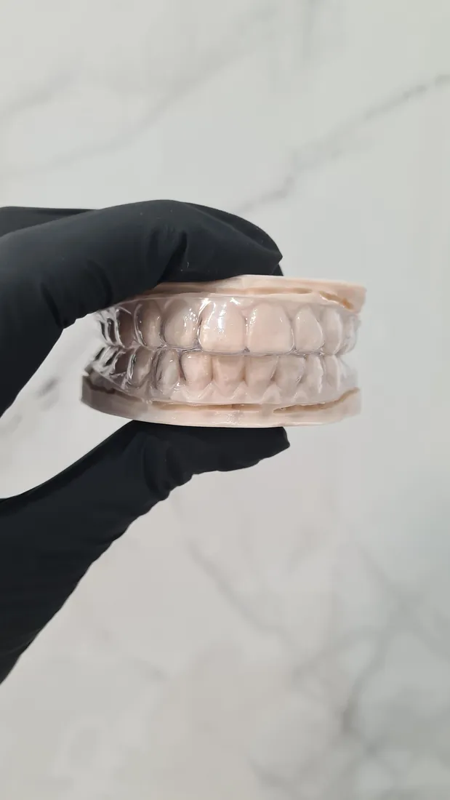
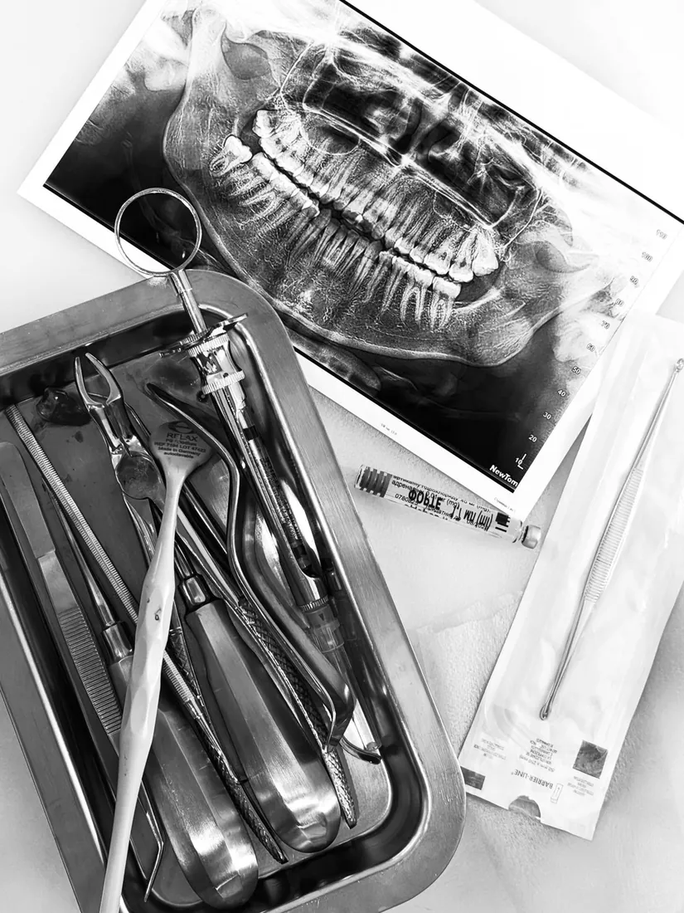

Головна / Про лікаря
Вікторія Вікторівна Собко
Стоматолог у Миколаєві. Лікування під мікроскопом, ортодонтія, протезування, гігієна та відбілювання.

Чесно про лікування — і без страху
Вікторія пояснює пацієнтові кожен етап: що буде зараз, що потім і навіщо. У її Instagram — розбори міфів про брекети, поради з догляду та фото робіт до і після.
Якщо лікування в конкретній ситуації може зашкодити, вона прямо про це скаже. Відмова від втручання — теж професійне рішення, коли на кону безпека пацієнта.
«Самолікування шкідливе для вашого здоров’я. Краще прийти на огляд вчасно».
Навчання та сертифікати
Частина курсів, сертифікати яких Вікторія показує у своєму Instagram.
Фронтальна група зубів: функціональні та естетичні аспекти прямої реставрації
Курс з художньої реставрації
Жувальна група зубів: функціональні та естетичні аспекти прямої реставрації
Курс з художньої реставрації
Сучасна ортопедична стоматологія
Навчальний центр Fenestra
Ортопедична стоматологія: вініри та вкладки
Навчальний центр Fenestra
Починай працювати з мікроскопом
Ендодонтія: базові принципи, практичний курс
Повторне ендо — робота ендодонтиста
Microinfinity club
Advanced Teeth Whitening
Amazing White, сертифікат про навчання
Плазмотерапія в стоматології
PlasmaTherapy Multimed
Базовий курс з хірургічної стоматології
Сертифікат про участь
Невідкладні стани на стоматологічному прийомі
Сертифікат про участь
Кабінет і робочі будні
Фото з Instagram лікаря.




Почнімо з консультації
Огляд, за потреби прицільний знімок і чесний план: що лікувати зараз, а що може почекати. Записуйтеся телефоном або в Direct.